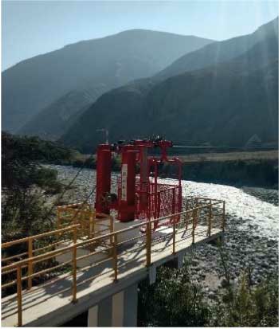

TRE-H-500 kg · 100 m
Tracción manual o a pedal
La cabina se desplaza sobre dos portadores, traccionada por un cable tractor propulsado con pedales o manivela desde la cabina. Dos puntos de tracción en los pórticos permiten “llamar” el vehículo desde la orilla opuesta. Pensado para cruces cortos sin energía.
- Diseño y construcción llave en mano
- Operación accionada mediante pedal o manivela
- Mantenimiento según manual de operación
- Trayectoria horizontal, luz promedio hasta 100 m
Ficha técnica
Capacidad500 kg o 6 pasajeros
Velocidad0.15 m/s
PotenciaManual / pedal
Longitudhasta 100 m
TipoVaivén · 2 portadores + tractor